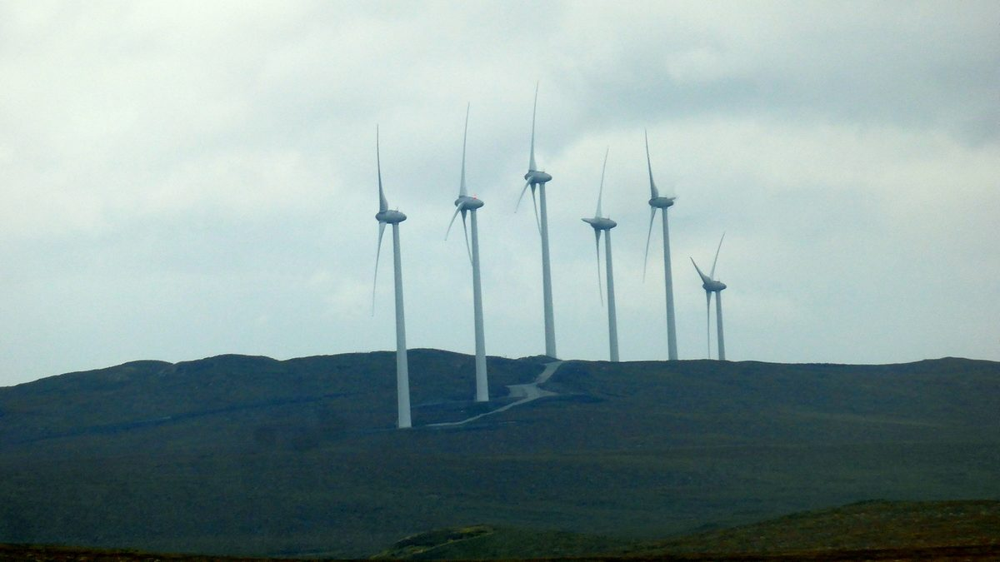

스코틀랜드 외부헤브리디스 의회, 공동체 소유 에너지 국가 시범지역 지정 요구

GB에너지 의장·에너지안보넷제로부에 서한…섬 방문과 공동체 주도·공유지분 사업 위한 금융·기술 지원 요청
스코틀랜드 외부헤브리디스(Outer Hebrides) 지방의회(Comhairle nan Eilean Siar)가 이 섬들을 공동체 소유 에너지를 최대한 키우는 국가 시범지역(national demonstrator)으로 인정해 달라고 영국 정부와 공영 에너지회사에 요구했다. 폴 스틸(Paul Steele) 의회 의장은 GB에너지의 위르겐 마이어(Juergen Maier) 의장과 에너지안보·넷제로부의 미아타 판불레(Miatta Fahnbulleh) 하원의원에게 서한을 보내 넷제로 전환에서 공동체 에너지가 갖는 무게를 강조하고, 섬들을 그 가능성을 보여 주는 국가적 본보기로 삼자고 제안했다. 의회는 GB에너지 관계자들에게 섬을 찾아 지역 파트너들을 만나고 재생에너지 기회와 공동체 주도 사업, 기반시설 개발 현장을 직접 보라고 초청했다. 영국 정부에는 지역에서 준비 중인 공동체 주도·공유지분(shared-ownership) 사업들을 뒷받침할 새로운 금융·기술 지원책을 요청했다. 스틸 의장은 이 섬들이 이미 공동체 에너지 소유를 이끌어 왔다며, 재원 조달 방식과 규제, 전력망 정책을 조금만 바꿔도 영국 다른 곳에 옮겨 심을 수 있는 모델을 만들 수 있다고 말했다.
시민에너지 관점
지방의회가 먼저 공동체 소유 에너지의 시범지역이 되겠다고 중앙정부와 공영 에너지회사에 손을 든 것은, 지역이 재생에너지의 터만 내주는 곳이 아니라 주인이 되겠다는 선언이다. 작은 섬의 공동체 사업으로는 국가 전환의 규모를 감당할 수 없다는 반론이 있을 수 있지만, 같은 주 셰틀랜드를 찾은 GB에너지 최고경영자도 섬에서 찾은 해법을 다른 섬과 본토 지자체로 넓힐 수 있다고 밝혔다. 공유지분과 공동체 주도 사업은 수익과 결정권을 지역에 남겨, 발전소가 들어설 때마다 되풀이되는 갈등을 줄이는 길이 될 수 있다. 국내 지자체도 주민 소유 재생에너지 시범지역을 스스로 제안하고, 정부는 이를 뒷받침할 금융·계통 지원 틀부터 마련해야 한다.
출처: We Love Stornoway 2026-10-22 기자 미표기 원문 보기
スコットランド・アウター・ヘブリディーズ議会、コミュニティー所有エネルギーの国家モデル地域への指定を要求
GBエナジー会長とエネルギー安全保障・ネットゼロ省に書簡…島の訪問と、コミュニティー主導・共同所有事業への金融・技術支援を要請
スコットランドのアウター・ヘブリディーズ（Outer Hebrides）の地方議会（Comhairle nan Eilean Siar）が、島々をコミュニティー所有エネルギーを最大限に広げる国家モデル地域（national demonstrator）として認めるよう、英国政府と公営エネルギー会社に求めた。ポール・スティール（Paul Steele）議会議長は、GBエナジーのユルゲン・マイヤー（Juergen Maier）会長と、エネルギー安全保障・ネットゼロ省のミアッタ・ファーンブレ（Miatta Fahnbulleh）下院議員に書簡を送り、ネットゼロへの転換におけるコミュニティー・エネルギーの重要性を強調したうえで、島々をその可能性を示す全国の手本にしようと提案した。議会はGBエナジーの関係者に対し、島を訪れて地域のパートナーと会い、再生可能エネルギーの機会やコミュニティー主導の事業、インフラ開発の現場を直接見てほしいと招いた。英国政府には、地域で準備が進むコミュニティー主導・共同所有（shared-ownership）事業を後押しする新たな金融・技術支援策を要請した。スティール議長は、この島々はすでにコミュニティーによるエネルギー所有を先導してきたとし、資金調達の仕組みや規制、送電網政策を少し変えるだけで英国の他地域にも移せるモデルをつくれると述べた。
市民エネルギーの視点
地方議会が自らコミュニティー所有エネルギーのモデル地域になると中央政府と公営エネルギー会社に名乗り出たことは、地域が再生可能エネルギーの用地を差し出すだけの場所ではなく、所有者になるという宣言だ。小さな島のコミュニティー事業では国全体の転換規模を担えないという反論もあり得るが、同じ週にシェトランドを訪れたGBエナジーの最高経営責任者も、島で見つけた解決策を他の島や本土の自治体に広げられると述べている。共同所有とコミュニティー主導の事業は収益と決定権を地域に残し、発電所ができるたびに繰り返される対立を減らす道になり得る。韓国の自治体も住民所有の再生可能エネルギーのモデル地域を自ら提案し、政府はそれを支える金融・系統支援の枠組みから整えるべきだ。
出典: We Love Stornoway 2026-10-22 記者名なし 原文を読む
苏格兰外赫布里底群岛议会要求被指定为社区所有能源国家示范区
致函GB Energy董事长和能源安全与净零部，邀请到访并请求为社区主导和共同所有项目提供金融与技术支持
苏格兰外赫布里底群岛（Outer Hebrides）地方议会（Comhairle nan Eilean Siar）要求英国政府和国有能源公司，承认这些岛屿为最大限度发展社区所有能源的国家示范区（national demonstrator）。议会领袖Paul Steele致函GB Energy董事长Juergen Maier和能源安全与净零部的下院议员Miatta Fahnbulleh，强调社区能源在净零转型中的重要性，并提议把这些岛屿作为展示其潜力的全国样板。议会邀请GB Energy相关人员到访岛屿，与当地合作伙伴会面，实地了解可再生能源机会、社区主导项目和基础设施建设。议会还请求英国政府出台新的金融和技术支持措施，以支撑当地正在筹备的社区主导和共同所有（shared-ownership）项目。Steele表示，这些岛屿早已在社区能源所有权方面走在前列，只要对融资机制、监管和电网政策稍作调整，就能形成可以复制到英国其他地方的模式。
市民能源视角
地方议会主动向中央政府和国有能源公司申请成为社区所有能源示范区，等于宣告地方不只是为可再生能源提供场地，而是要成为主人。也许有人认为小岛上的社区项目承担不了全国转型的规模，但同一周到访设得兰的GB Energy首席执行官也表示，在岛上找到的办法可以推广到其他岛屿和本土地方政府。共同所有和社区主导项目把收益和决策权留在地方，有望减少每建一座电站就重复上演的冲突。韩国的地方政府也应主动申请居民所有可再生能源示范区，政府则应先建立相应的金融与电网支持框架。
来源: We Love Stornoway 2026-10-22 未署名 查看原文
Outer Hebrides council asks to be named national demonstrator for community-owned energy
Letters to GB Energy chair and the energy security and net zero department invite a visit and seek financing and technical support for community-led and shared-ownership projects
Comhairle nan Eilean Siar, the local council for Scotland's Outer Hebrides, has asked the UK government and the publicly owned energy company to recognize the islands as a national demonstrator for maximizing community energy. Council leader Paul Steele wrote to GB Energy chair Juergen Maier and to Miatta Fahnbulleh MP of the Department for Energy Security and Net Zero, stressing the role of community energy in the transition to net zero and proposing that the islands serve as a national example of what is possible. The council invited GB Energy representatives to visit, meet local partners and see renewable energy opportunities, community-led initiatives and infrastructure work first-hand. It also asked the UK government for new financing and technical measures to support the local pipeline of community-led and shared-ownership projects. Steele said the islands have already led the way in community energy ownership and that relatively modest changes to funding mechanisms, regulation and grid policy could create a model that could be replicated elsewhere in the UK.
Citizen Energy View
A local council stepping forward to be a demonstrator for community-owned energy is a declaration that places hosting renewables want to be owners, not just sites. Some may argue that small island projects cannot match the scale of a national transition, yet in the same week GB Energy's chief executive, visiting Shetland, said solutions found on islands could be scaled to other islands and mainland municipalities. Shared ownership and community-led projects keep revenue and decisions local, which can ease the conflicts that recur each time a power plant is built. Korean local governments should propose resident-owned renewable demonstration zones themselves, and the national government should first put in place the financing and grid support to back them.
Source: We Love Stornoway 2026-10-22 No byline Read the original